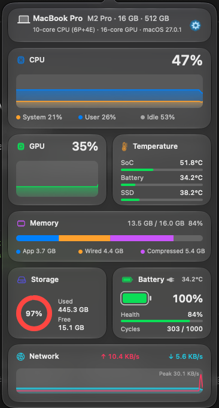
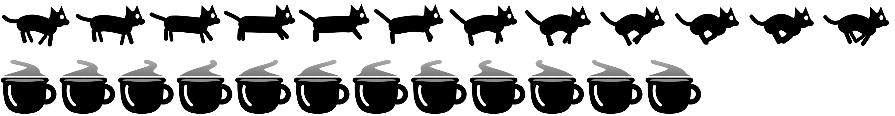
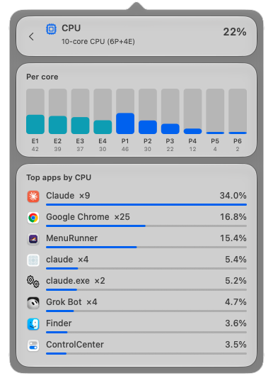
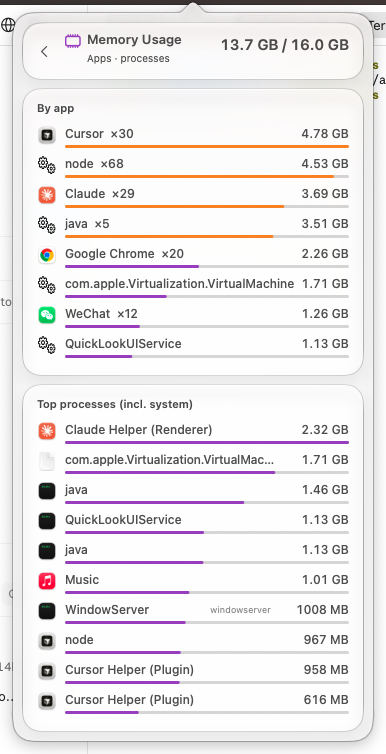
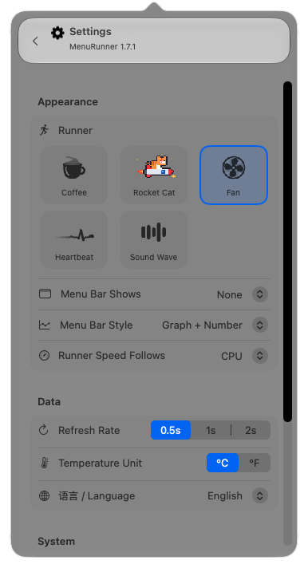
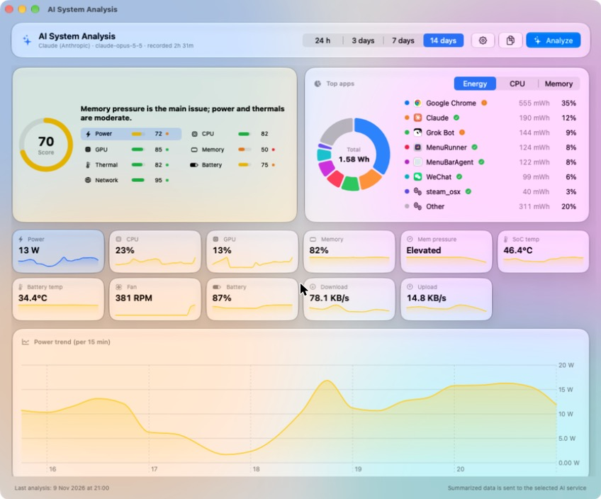

◧
Menu bar metrics
CPU, GPU, memory, battery, network, temperature and fan speed with live mini graphs. Graph, number, or both.
Free and open source · macOS 14+ · Apple Silicon
A tiny animated runner that speeds up as your Mac works harder, and a Liquid Glass panel with CPU, GPU, memory, temperatures, fans, battery, network and power, one click away.
Latest release v1.9

Runners
Eleven original runners drawn in code. Each one follows CPU, GPU or memory usage in three clearly different levels. Try it:
Tip: click a runner to put it in the menu bar up top.

Features
CPU, GPU, memory, battery, network, temperature and fan speed with live mini graphs. Graph, number, or both.
Machine spec, CPU and GPU history, memory breakdown, storage, battery health and network, animated at 60 fps.
Per-core CPU, top apps by CPU, GPU, memory and traffic, every temperature sensor, all volumes and full battery info.
SoC, battery and SSD temperatures plus each fan's RPM, read without root. Fanless Macs simply hide the fan row.
Whole-system watts and the apps drawing the most power, with a 24-hour chart and 14 days of history.
Checks GitHub Releases every 6 hours, installs the new version in place and relaunches. English and Simplified Chinese.



AI power analysis
MenuRunner records per-app energy and system stats in 5-minute buckets. One click sends a summary to Claude or any OpenAI-compatible endpoint and tells you what to change.

Install
Open the DMG and drag MenuRunner into your Applications folder.
The app is not notarized. Click Open Anyway in System Settings → Privacy & Security, or run:
$ xattr -dr com.apple.quarantine /Applications/MenuRunner.appLeft-click the menu bar icon to open the panel. Right-click it, or use the gear button, for settings.